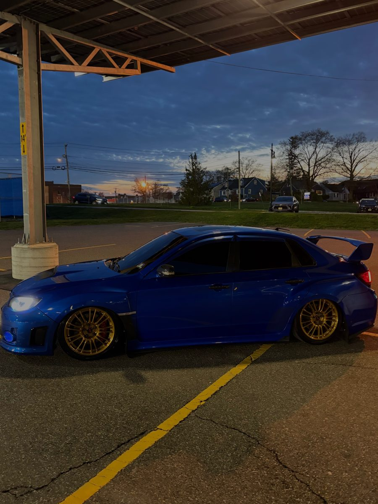
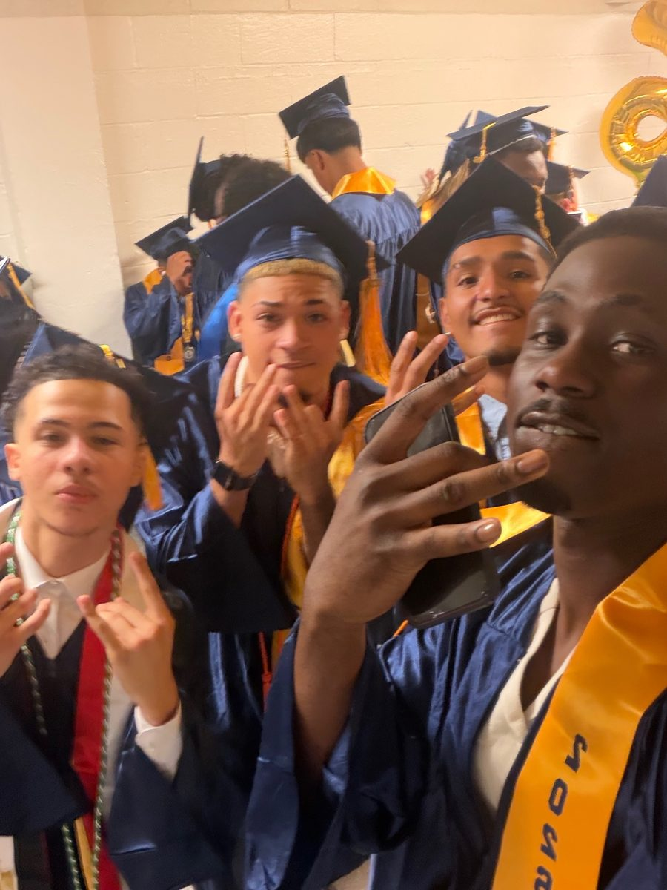
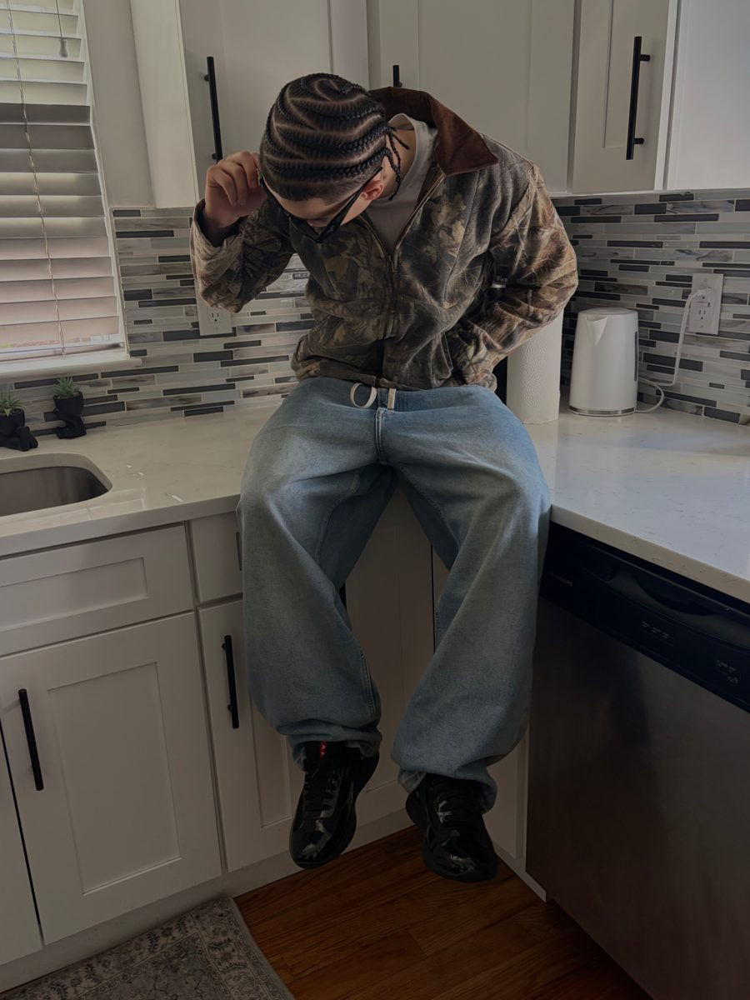

About Me
Background
I am a first-year student at the New Jersey Institute of Technology in Fall 2026. I am interested in software, data, and how programs can solve everyday problems.
Education
- New Jersey Institute of Technology, Fall 2026
- SDET 101: Fundamentals of Software and Data
- MATH 107: University Mathematics A
- ENGL 101: Introduction to Academic Writing
- PHYS 102: General Physics I and General Physics I Lab
- First-Year Seminar
Interests
I like building small programs in Python, working with lists and data, and learning how websites are built with HTML, CSS, and JavaScript. I also like learning how real data, such as inventory data, can be collected and used.
Outside of Class
Outside of class, I love playing all different kinds of sports, and I like watching games too. I also like betting on different games, and hanging out with my friends. I love cars and working on cars, and learning how they work. I also like fashion and wearing different fits to go out.
More About Me
Here are a few photos that show what I am into.


